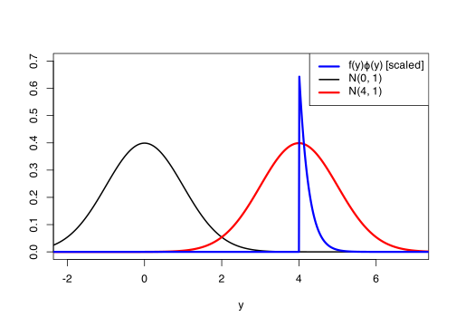
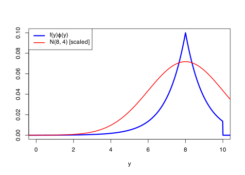
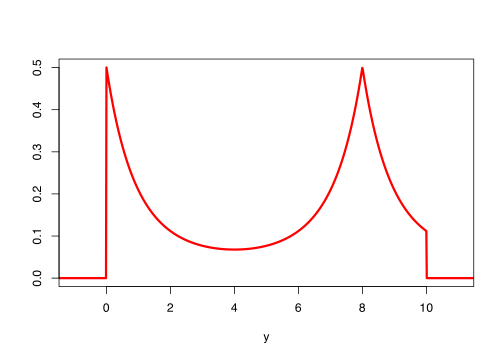

Let’s remind ourselves where we’ve got to on importance sampling.
We want to estimate \(\Exg \phi(X)\).
Rather than sampling from \(X\), with PDF \(f\), we instead sample from a different distribution \(Y\), with PDF \(g\).
The estimator is \({\displaystyle \widehat\theta_n^{\text{IS}} = \frac{1}{n} \sum_{i=1}^n \frac{f(Y_i)}{g(Y_i)} \, \phi(Y_i) .}\)
We’ve seen that importance sampling can be a very powerful tool, when used well. But how should pick a good distribution \(Y\) to sample from?
Let’s examine the mean-square error more carefully: \[ \operatorname{MSE}\big(\widehat{\theta}_n^{\mathrm{IS}}\big) = \frac{1}{n} \operatorname{Var}\left( \frac{f(Y)}{g(Y)}\,\phi(Y) \right) . \] So our goal is to try and pick \(Y\) such that \(\frac{f(Y)}{g(Y)}\phi(Y)\) has low variance. We also, of course, want to be able to sample from \(Y\).
The best possible choice, then, would be to pick \(Y\) such that \(\frac{f(Y)}{g(Y)}\phi(Y)\) is constant – and therefore has zero variance! If \(\phi\) is non-negative, then it seems like we should pick \(Y\) such that its probability density function is \(g(y) \propto f(y)\phi(y)\). (Here, \(\propto\) is the “proportional to” symbol.) That is, to have \[ g(y) = \frac{1}{Z} f(y)\phi(y) , \] for some constant \(Z\). Then \(\frac{f(Y)}{g(Y)}\phi(Y) = Z\) is a constant, has zero variance, and we have a perfect estimator!
What is this constant \(Z\)? Well, \(g\) is a PDF, so it has to integrate to 1. So we will need to have \[ 1 = \int_{-\infty}^{+\infty} g(y)\, \mathrm{d}y = \int_{-\infty}^{+\infty} \frac{1}{Z} f(y)\phi(y) \, \mathrm{d}y = \frac{1}{Z} \int_{-\infty}^{+\infty} f(x)\phi(x) \, \mathrm{d}x = \frac{1}{Z} \Exg\phi(X) . \] (We did the “switching the dummy variable from \(y\) to \(x\)” thing again.) So \(Z = \Exg \phi(X)\). But that’s no good: \(\theta = \Exg \phi(X)\) was the thing we were trying to estimate in the first place. If we knew that, we wouldn’t have to do Monte Carlo estimation to start with!
So, as much as we would like to, we can’t use this “perfect” ideal distribution \(Y\). More generally, if \(\phi\) is not always non-negative, it can be shown that \(g(y) \propto f(y)\,|\phi(y)| = |f(x)\,\phi(x)|\) would be the best possible distribution, but this has the same problems.
However, we can still be guided by this idea – we would like \(g(y)\) to be as close to proportional to \(f(y) \phi(y)\) (or \(|f(y) \phi(y)|\)) as we can manage, so that \(\frac{f(y)}{g(y)}\phi(y)\) is close to being constant, so hopefully has low variance. This tells us that \(Y\) should be likely – that is, \(g(y)\) should be big – where both \(f\) and \(|\phi|\) are both big – that is, where \(X\) is likely and also \(\phi\) is big in absolute value. While \(Y\) should be unlikely where both \(X\) is unlikely and \(\phi\) is small in absolute value.
Example 9.1 Let’s look again at Example 8.1 (continued in Example 8.2), where we wanted to estimate \(\mathbb P(X > 4) = \Exg\Ind_{(4,\infty)}(X)\) for \(X \sim \operatorname{N}(0,1)\). We found are estimator was enormously improved when we used instead \(Y \sim \operatorname{N}(4,1)\).
In the figure below, the blue line is \[f(y)\,\phi(y) = f(y)\,\Ind_{(4,\infty)}(y) = \begin{cases} \displaystyle\frac{1}{\sqrt{2\pi}} \,\mathrm{e}^{-y^2/2} & y > 4 \\ 0 & y \leq 4 \end{cases} \] (scaled up, otherwise it would be so close to the axis line you wouldn’t see it).
The black line is the PDF \(f(y)\) of the original distribution \(X \sim \operatorname{N}(0,1)\), while the red line is the PDF \(g(y)\) of our importance distribution \(Y \sim \operatorname{N}(4,1)\).
Code for drawing this graph
curve(dnorm(x, 0, 1), n =1001, from =-2.5, to =7.5,col ="black", lwd =2,xlim =c(-2, 7), xlab ="y", ylim =c(0, 0.7), ylab ="")curve(dnorm(x, 4, 1), n =1001, from =-2.5, to =7.5,add =TRUE, col ="red", lwd =3,)curve(dnorm(x, 0, 1) * (x >4) *5000, n =1001, from =-2.5, to =7.5,add =TRUE, col ="blue", lwd =3)legend("topright",c(expression(paste("f(y)", varphi, "(y) [scaled]")), "N(0, 1)", "N(4, 1)"),lwd =c(3, 2, 3), col =c("blue", "black", "red"))

We have noted that a good distribution will have a PDF that is big when \(f(x)\phi(x)\) (the blue line) is big. Clearly the red line is much better at this then the black line, which is why the importance sampling method was so much better here.
There’s scope to do better here, though. Perhaps an asymmetric distribution with a much more quickly-decaying left-tail might be good – for example, a shifted exponential \(4 + \operatorname{Exp}(\lambda)\) might be worth investigating. Or a thinner, spikier distribution, such as a normal with smaller standard deviation. In both cases, though, we have to be careful – because it’s the ratio \(f(y)/g(y)\), we still have to be a bit careful about what happens when both \(f(y)\) and \(g(y)\) are small absolutely, in case one is proportionally much bigger than the other.
Aside from the exact theory, in the absence of any better idea, choosing \(Y\) to be “in the same distribution family as \(X\) but with different parameters” is often a reasonable thing to try. For example:
If \(X \sim \operatorname{N}(\mu, \sigma^2)\), then try \(Y \sim \operatorname{N}(\nu, \sigma^2)\) for some other value \(\nu\).
If \(X \sim \operatorname{Exp}(\lambda)\), then try \(Y \sim \operatorname{Exp}(\mu)\) for some other value \(\mu\).
9.2 Bonus example
Example 9.2Let\(X \sim \operatorname{U}[0, 10]\) be an uniform distribution, so \(f(x) = \frac{1}{10}\) for \(0 \leq x \leq 10\), and let \(\phi(x) = \mathrm{e}^{-|x-8|}\). Estimate \(\Exg\phi(X)\).
The standard Monte Carlo estimator and its RMSE are as follows
Maybe we can improve on this using importance sampling. Let’s have a look at a graph of \(f(y)\,\phi(y)\) (blue line).
Code for drawing this graph
curve(dunif(x, 0, 10) *exp(-abs(x -8)), n =1001, from =-1, to =11,col ="blue", lwd =3,xlim =c(0, 10), xlab ="y", ylab ="")curve(dnorm(x, 8, 2)*0.36, n =1001, from =-1, to =11,add =TRUE, col ="red", lwd =2,)legend("topleft",c(expression(paste("f(y)", varphi, "(y)")), "N(8, 4) [scaled]"),lwd =c(3, 2), col =c("blue", "red"))

After some experimentation, I decided that \(Y \sim \operatorname{N}(8, 2^2)\) (red line; not to same scale) seemed to work quite well, in \(g(y)\) being roughly proportional to \(f(y)\,\phi(y)\). (Maybe reducing the standard deviation a bit more, to around 1.6, to get the red curve a bit tighter, might have done a little bit better still.)
The following graph shows \(\frac{f(y)}{g(y)} \phi(y)\), and shows that the graph is not too pointy, so should have reasonably small variance.
Code for drawing this graph
curve(dunif(x, 0, 10) *exp(-abs(x -8)) /dnorm(x, 8, 2), n =1001, from =-2, to =12,col ="red", lwd =3,xlim =c(-1, 11), xlab ="y", ylab ="")

So our importance sampling estimate is as follows.
We see that the RMSE has roughly halved, which is the equivalent of taking four times as many samples.
9.3 Summary of Part I
This is our last lecture on Monte Carlo estimation – at least for now, and at least in its standard form. So let’s end this section of the module by summarising the estimators we have learned about. We have been learning how to estimate \(\theta = \Exg \phi(X)\)
The standard Monte Carlo estimator simple takes a sample mean of \(\phi(X_i)\), where \(X_i\) are independent random samples from \(X\).
The control variate Monte Carlo estimator “anchors” the estimator to some known value \(\eta = \Exg \psi(X)\), for a function \(\psi\) that is “similar to \(\phi\), but easier to calculate the expectation exactly”.
The antithetic variables Monte Carlo estimator uses pairs of samples \((X_i, X'_i)\) that both have the same distribution as \(X\), but where \(\phi(X)\) and \(\phi(X')\) have negative correlation \(\rho < 0\).
The importance sampling Monte Carlo estimator samples not from \(X\), with PDF \(f\), but from a different distribution \(Y\), with PDF \(Y\). The distribution \(Y\) is chosen to oversample from the most important values, but then gives lower weight to those samples.
Next time:We begin the second section of the module, on random number generation.
Summary:
A good importance sampling distribution \(Y\) is one whose PDF \(g(y)\) is roughly proportional to \(|f(y)\,\phi(y)|\). Equivalently, \(\frac{f(y)}{g(y)}|\phi(y)|\) is approximately constant.
You should now be able to answer Questions 1–3 on Problem Sheet 2.